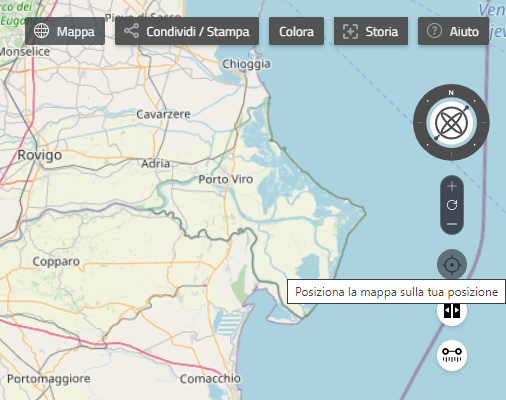

Mappa
Ci sono diversi modi, tra loro equivalenti, di navigare nella mappa.
Consiglio: Passando il mouse sopra i Controlli di navigazione compaiono dei tooltip di aiuto.
Zoomare
Muovi il mouse dove vuoi sulla mappa ed usa la rotella per zoomare avanti o indietro.
Clicca sul tasto destro e trascina in su o in giù per zoomare avanti o indietro (trascinare verso destra o sinistra non ha effetto).
Clicca sulle icone di controllo dello zoom (+ e -) per modificarlo.
Muovere
Clicca in qualsiasi punto della mappa e trascina per muovere.
Reset della vista
Clicca l'icona di reset, posizionata fra i due controlli dello zoom, per tornare alla vista iniziale.
(Premendo il tasto F5 sulla tastiera, la pagina di rer3d-map sarà ricaricata. Questo comporta un completo reset della sessione, di quello che si stava visualizzando o facendo. Di conseguenza è sconsigliato a meno che non si renda necessario per l'insorgere di problemi.)
Ruotare
Usa l'icona della bussola per ruotare la mappa di quanto desiderato, cliccandoci e trascinandola fino a impostare la nuova direzione.
Control + left-click and drag left or right over the map to rotate the view about the centre (on Windows systems you can also use Middle-click and drag).
Vista 3D
Clicca sul “giroscopio” al centro della bussola e trascina lentamente per inclinare o ruotare la visuale. Allo stesso modo è possibile tornare alla vista dall'alto.
Altre modalità per inclinare e ruotare la visuale sono l'uso di CTRL + tasto sinistro e l'uso del tasto di mezzo del mouse.
Un doppio click sul “giroscopio” al centro della bussola riporta la vista dall'alto, con il Nord della bussola puntato sulla parte alta della mappa ma senza modificare il livello di scala e la posizione (al contrario del tasto di reset).
Nel caso in cui, navigando, ci si sia "persi" è possibile cercare di riorientarsi zoomando indietro o riportando la vista dall'alto come indicato sopra.
Cambiare Mappa base
Clicca sul bottone Mappa, in alto nella schermata, per aprire il pannello di selezione delle Mappe base.

- Seleziona 2D per visualizzare una classica mappa 2D. In questa modalità non è possibile ruotare o inclinare la mappa ed i dati riguardanti il terreno non sono attivi.
- Seleziona 3D piatto per visualizzare la mappa in 3D ma senza modello del terreno. Mappe e layer sono posizionati su un globo piatto.
- Seleziona 3D con terreno per visualizzare la mappa 3D con modello del terreno. 3D piatto e 3D con terreno se viste dall'alto appaiono identiche. La modalità 3D potrebbe non funzionare su alcuni computer (senza scheda video) o con browser troppo obsoleti..
- Clicca su una delle icone delle Mappe base per selezionarla. Passa il mouse sopra le icone per vedere il nome della mappa.